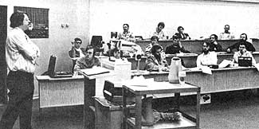

The response to that first class was so overwhelming (far more people wanted to attend than the school could accommodate) that the one-day "short course" has since been offered-and oversubscribed- seven more times. Demand also has forced the university (twice so far) to sponsor a more technical two-day seminar on the subject for engineers, architects, and building contractors.
The classes are conducted by Dr. Lester Boyer, Professor Arlyn Orr, and Visiting Professor Walter Grondzik . . . three men with "real world" subterranean structure experience under their belts. Dr. Boyer, the principal instructor-for example-worked with Benham Blair and Affiliates on an underground design for an energy conserving state office building which won top prize in a California competition.
One of the first things these professors of "subsoil architecture" did-back when they were still planning their popular series of classes-was to make a survey (with the cooperation of the County Extension Offices around the state) of all the existing underground structures within Oklahoma's borders. The canvass turned up a surprising number of people already happily living in subterranean dwellings!
By visiting and talking with these modern-day troglodytes-and photographing their houses-Dr. Boyer and Professors Grondzik and Orr have been able to pack their courses with firsthand underground living experiences and slides of already built subterranean structures. They are then able to point out design features which are known to work well . . . as opposed to the ideas that time has shown to be real clinkers.
Both the one-day and two-day classes also include (as, of course, they should) a thorough discussion of the potential difficulties of building below the surface: How do you design the entrance to such a dwelling? Or create a view in a windowless room? What can go wrong with water-proofing . . . ventilation . . . wall and roof loadings? Can you finance an underground house?
The advantages of subterranean living quarters are stressed too: They can make possible the "double use" of a piece of land . . . encourage rainwater percolation instead of erosion and flash floods . . . substitute oxygen-even food-production for the lifeless roofs of a conventional house. Underground homes are storm-proof, earthquake-proof, and extremely energy efficient. They can offer unusual protection from noise, air pollution, and vandalism. And so on and on.
In short, the Oklahoma State University one- and two-day seminars on subterranean dwellings are well worth their modest costs ($30 and $100 per person exclusive of food, lodging, and transportation). And MOTHER makes that statement with some authority, since one of her researchers-Travis Brock-recently attended an OSU seminar and liked what he saw.
"When you finish one of these programs," says Travis, "you probably won't have a working blueprint of your own future underground house in your hand, or even in your head. But you will be aware of the many possibilities you can take advantage of . . . and the pitfalls you should watch out for."
Bear in mind, too, that the classes described here have been calculated to meet the needs of folks interested in constructing subterranean dwellings in the state of Oklahoma . . . and everything taught in these particular courses may not apply straight across the board for all other sections of the country.
Still and all, there's no place else in the country-or the world!-where you can learn so much about underground housing design so quickly and for so little . . . and MOTHER highly recommends the OSU seminars. For more information, send a stamped, self-addressed, long envelope to Architectural Extension, Oklahoma State University, 313 Crutchfield Hall, Stillwater, Okla. 74074. And if you just want a list of subterranean structure "resource people" around the country and/or a reading list of literature on the subject, ask for that too. But don't forget that return envelope!
|
 |
|
|